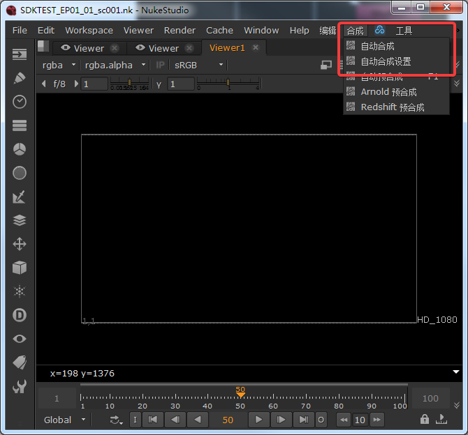
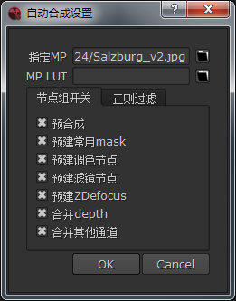
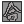
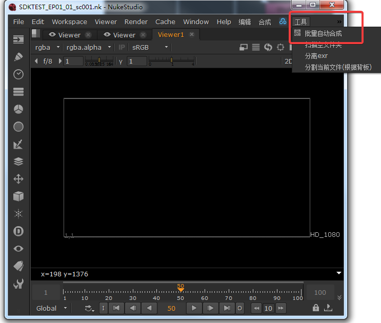
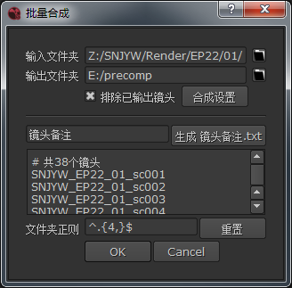
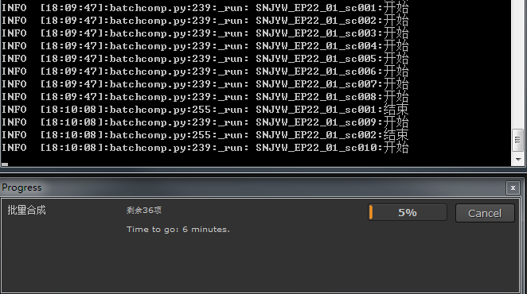

自动合成¶
自动合成当前导入的素材。
可设置需要自动合成的内容。
 批量自动合成¶
 合成/自动合成的批量版本 直接自动合成大量镜头
使用多线程, 内存不足时会等待足够的空闲内存再继续。
批量合成日志¶
素材命名要求¶
自动合成对文件夹命名有要求
范例¶
符合标准的命名:
SNJYW_ep123_01abcd_sc001abc_CH_B_asdasdqwe_asdSNJYW_EP01_01_sc001_CH_AEP01_01_sc001_CH_AEP01_sc001_CH_ACH_ACH
详细定义¶
命名由3部分组成:
前缀
格式: [字符
_][ep数字_][数字[字母]_][sc数字[字母]_]标签
格式: 字母[字符]
_[字母[字符][_或.]]后缀
格式不限
后缀决定了相同标签的自动合成顺序
注解
用方括号括起的部分为可选
字符 = 字母 + 数字
字符不包含 ., \, _
匹配所用正则表达式:
(?i)(?:[^_]+_)?(?:ep\d+_)?(?:\d+[a-zA-Z]*_)?(?:sc\d+[a-zA-Z]*_)?((?:[a-zA-Z][^\._]*_?){,3})
标准标签¶
推荐使用以下标签:
BG_单个字母例如:
BG_A,BG_BCH_单个字母例如:
CH_A,CH_BCH层在自动合成中会叠加在所有BG层之上
SH或SH_任意例如:
SH,SH_CHOCC或OCC_任意例如:
OCC,OCC_BG
如果文件名不含标准标签而父目录名称含标准标签时将使用父目录名称作为命名
注解
部分常用别称会在识别时自动转换成标准标签
版本¶
所有素材的后缀中应该含有 _v数字. 或者 _v数字_
例如:
CH_A_test_v1_abc.exr,CH_B_v0.exr
第一个版本就要有版本号 无论之后是否会修改
只有使用了版本号的素材才能在nuke中按 Alt+↑ 和 Alt+↓ 切换版本
注解
数字应为从0开始的正数
摄像机命名¶
推荐使用形如: 镜头名_起始帧_结束帧_c版本.fbx 的摄像机
例如:
SNJYW_EP01_01_sc001_1_999_c1.fbx
注解
使用 c版本 是nuke原生摄像机版本管理的规范
自动合成行为¶
合并顺序¶
如果标签后半部分有内容则会按字母顺序决定层的先后顺序
例如: BG_A(最底层) -> BG_B -> BG_C -> BG_D -> CH_A -> CH_B -> CH_C -> CH_D(最顶层)
Shadow阴影层¶
标签前缀为 SH 的素材将以阴影层标准方式合在最底层上
Occlusion闭塞层¶
标签前缀为 OCC 或 AO 的素材将以闭塞层标准方式合在最底层上
Fog灯光雾层¶
标签前缀为 FOG 的素材将以滤色(screen)模式合在最底层上
Precomp预合成¶
如果在设置中启用了 预合成 , 则:
多个同标签的素材将尝试预合成, 层名应该用 . 分割 例如: A.DiffuseLighting.exr